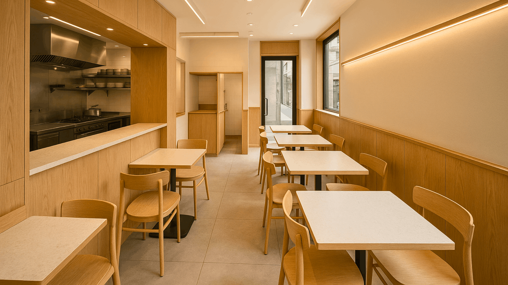
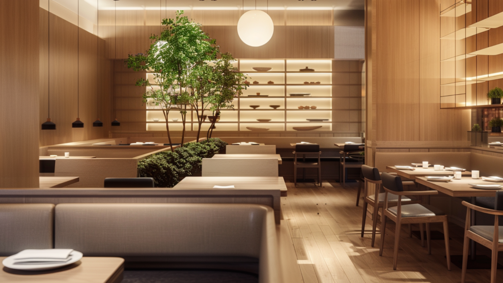
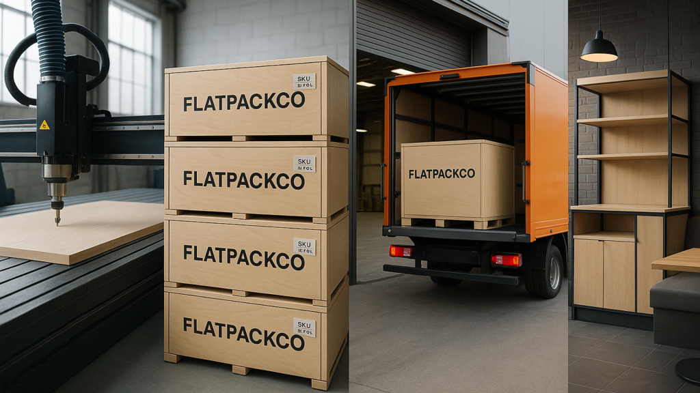

In 2025, restaurant design is not just about aesthetics — it’s about adaptability. With rising rentals and shrinking spaces, restaurants are embracing space-saving furniture ideas that maximize every square foot without compromising on style or experience.
Whether you’re designing a compact café, a bustling QSR, or a fine-dining bar, the right modular furniture can make your outlet feel larger, smarter, and effortlessly functional.
1. The Need for Space-Smart Design in Modern Restaurants

Urban F&B spaces are getting smaller — but consumer expectations are only getting bigger.
From delivery-first brands to immersive dining experiences, restaurateurs are now seeking restaurant design ideas that balance ambiance with efficiency.
A well-planned layout with space-saving furniture allows for:
- Better guest circulation.
- Quicker cleaning and maintenance.
- Flexible zoning (for dine-in, takeaway, and waiting areas).
- Higher revenue per square foot.
Design is no longer just about looking good — it’s about performing well.
2. Modular Furniture: The Future of Flexible Fitouts
The biggest shift in restaurant design today is modular furniture — pieces that can be assembled, disassembled, or reconfigured with ease.
From collapsible tables to interchangeable seating systems, modular design helps brands expand faster across multiple outlets while maintaining consistency.
At SprintCo, we’ve seen how modular setups — powered by FlatPackCo’s system — reduce fitout time by up to 60%.
That’s not just convenient. That’s business agility.Why modular works:
→ Easy relocation and scalability.
→ Reduced installation time.
→ Lower logistics and maintenance costs.
→ Customizable aesthetics for brand identity.
3. Hidden Storage: The Invisible Hero

A clutter-free restaurant feels bigger — even when it isn’t.
Hidden storage furniture like under-bench drawers, lift-up seat compartments, or wall-mounted racks ensures your essentials are accessible but invisible.
Pro tip: Combine storage with your brand design. For example, a rustic wooden bench can double up as extra napkin or menu storage without breaking the visual theme.
4. Foldable and Stackable Furniture: Designed for Versatility

If your space serves different purposes through the day — café by morning, cocktail bar by night — foldable furniture is your best friend.
Opt for:
- Foldable tables and nesting chairs that can be tucked away in seconds.
- Stackable stools for dynamic seating arrangements.
- Extendable counters for peak-hour service or event setups.
These quick-change elements turn a static restaurant into a flexible experience hub — a growing trend in 2025 restaurant design.
5. Multi-Zoning Furniture: Divide and Design

Every inch counts — and every zone tells a story.
Instead of fixed partitions, use furniture that defines space naturally.
For example:
- Booth seating that doubles as dividers between dine-in and takeaway zones.
- Planters or shelving units that separate casual and premium dining areas.
- Moveable counter modules that allow seasonal or event-based reconfiguration.
- Smart zoning = higher occupancy + smoother flow.
6. Materials and Finishes That Maximize Space

The illusion of space isn’t just architectural — it’s sensory.
Using lighter tones, reflective surfaces, and clean-lined materials can visually expand a compact outlet.
Trending restaurant furniture materials for 2025:
- Birch wood and light oak for warmth and openness.
- Metal accents for durability and industrial minimalism.
- Compact laminate and quartz for sleek, easy-to-clean surfaces.
7. Before-and-After: Smart Design in Action
Imagine a 400 sq ft café that seats 12 people.
By switching to FlatPackCo’s modular fitout system, it now accommodates 20 guests — with better movement flow, hidden storage, and quick assembly.Design sketches or renders can showcase this dramatic transformation, illustrating how modular fitouts translate into real business value.
8. The FlatPackCo Advantage

SprintCo’s collaboration with FlatPackCo is redefining the way restaurants build and scale.
From compact kiosks to large-format dining spaces, the FlatPack system delivers faster, more flexible installations without compromising on design quality.
FlatPackCo’s modular design system helps you scale smart — and stay ahead of the curve.
Conclusion
In 2025, space-saving restaurant furniture isn’t a trend — it’s a necessity.
By embracing modular fitouts, hidden storage, and multi-functional furniture, restaurants can operate with greater efficiency, design fluidity, and brand coherence.
Because in modern F&B, smart design isn’t just about making space — it’s about making room for growth.
Pan-India presence | 3500+ F&B spaces delivered — Visit SprintCo’s Website